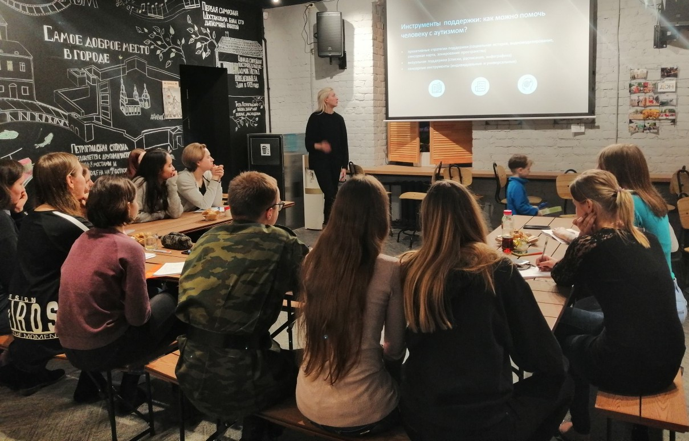
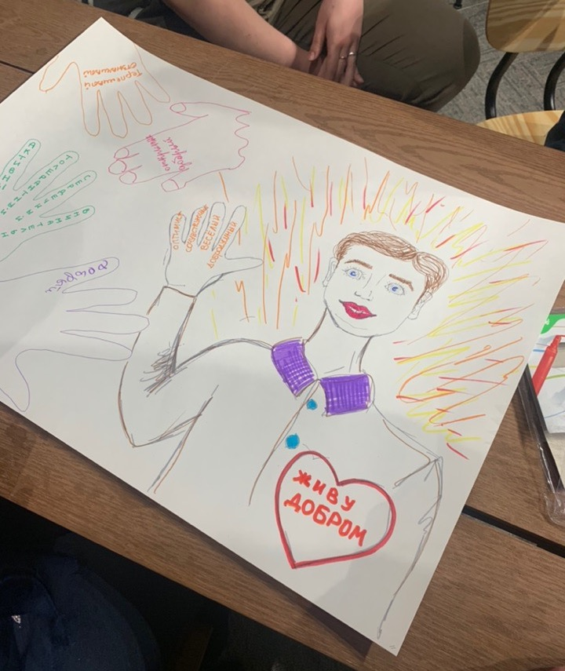

<div class="container">
    <div class="site-about">

        <p>
            Весной 2019 года наша команда запустила новый проект – инклюзивную школу волонтера «InTrue».  А сегодня — наша команда выиграла субсидию от 
            Комитета по молодежной политике и взаимодействию с общественными организациями Санкт-Петербурга. При поддержке Правительства мы впервые проводим 
            Первый форум инклюзивного волонтёрства «InTrue», который пройдет с 29 по 31 июля в молодежном пространстве «Просто», пр. Медиков, д. 3, корп. 5, 
            в очно-заочном формате.</p>
        
        <p>
            Форум направлен на формирование позитивного образа инклюзивного добровольца, базы знаний и навыков по вовлечению обучающихся, 
            специалистов государственных учрежде-ний и некоммерческого сектора, молодёжи с ограниченными возможностями здоровья в добровольческую деятельность, 
            а также на устранение психологических барьеров и приобретения коммуникативных навыков у молодёжи к взаимодействию с лицами с особенностями в развитии.
        </p>
        
        <p>
            Приглашаем каждого, кому неравнодушна данная тема, принять участие в Форуме! Вас ждут интерактивные сессии со специалистами в сфере инклюзивного 
            образования и волонтёрства, демонстрация успешных практик по работе с особыми людьми, общение с экспертами, дискуссии, мастер-классы. 
            Среди приглашенных гостей — руководители ведущих инклюзивных некоммерческих организаций Санкт-Петербурга и всей страны (г. Москва, г. Череповец, 
            р. Крым, р. Татарстан и др.). С программой форума подробнее можно ознакомиться <a target="_blank"
                                 href="https://vk.com/intrueforum">здесь</a>.  
        </p>
  
       <p> 
           Регистрация на форум продлится до 26 июля, подать заявку на участие можно <a target="_blank"
                                 href="https://clck.ru/W3MSD">по ссылке</a>
        </p>
        
        <p> Будем вам рады!</p> 
        <p> Участие бесплатно! Если остались вопросы, пишите на почту или звони нам!</p>
       
        <ul class="without-bullet">
            <li>
                <a href="mailto:intrueforum.info@gmail.com">
                    <i class="fa fa-envelope"></i> intrueforum.info@gmail.com
                </a>
            </li>
            <li>
                <a href="https://vk.com/intrueforum" target="_blank">
                    <i class="fa fa-vk"></i> intrueforum
                </a>
            </li>
            <li>
                <a href="hhttps://instagram.com/intrueforum" target="_blank">
                    <i class="fa fa-instagram"></i> intrueforum
                </a>
            </li>
        </ul>
        
        <p>Пресс-секретарь Форума инклюзивного волонтерства «InTrue»:<br>
            Кристина Стаскевич +7 999 216-19-87.<br>
        </p>
        <p>#intrueфорум #инклюзия #волонтерствоспб #мыпетербург</p>

        <div class="center-image-container">
            
        </div>
        <div class="center-image-container">
            
        </div>

        <hr style="margin-bottom: 30px; margin-top: 20px">

    </div>
</div>
